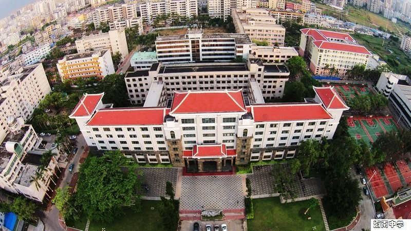

以校园里的一棵百年榄仁树为切口，讲述学校诞生于民族危难、成长于国家奋进的百年故事。

HAINAN MIDDLE SCHOOL / FUCHENG
20°N · 110°E
WALKTHE CAMPUS ↗
校园手记 / NO. 03 · AUTUMN / 校园创作样刊
SCROLL TO DISCOVER ↓
NOT ONLY A PLACE.
A WAY OF GROWING. ＋
A WAY OF GROWING. ＋
THE CAMPUS JOURNAL · EST. 1923
01FROM THE ARCHIVE / 新闻档案
校园的切片。
报道聚焦海南中学府城校区足球场的日常训练，记录学生们在球场上坚持与成长的故事。
在建校 100 周年节点上回望学校与海南共同走过的世纪，并展望其在自由贸易港背景下的新使命。
档案报道保留来源与原记录日期；创作摘要和待核资料分别标记。

04QUESTIONS WORTH ASKING / 学习的方向
答案之外，
继续提问。
这里描述学习的可能性，
不虚构竞赛成绩与学校成果。
05SMALL THINGS, SEEN.
日常，值得停留。
照片沿用仓库校园影像。
点击放大，慢慢看。
← 横向浏览校园影像 →
06THE BETWEEN-CLASS FREQUENCY / 课间电台
严肃生活，
偶尔离题。
虚构小报 · 非真实校园传闻
收集几则不太正经、但不伤害任何人的校园想象。
FM.01
虚构小报
树荫档案
榄仁树竞选“最稳定的情绪支持者”。
在这则虚构的校园小报里，它的竞选宣言只有一条：明天也在。竞选团队暂时只有几只鸟。
FM.02
虚构小报
图书馆传说
“看完这页就走”的背面，还有一页。
有人把它当作一个阅读悖论，也有人觉得这只是一张很懂拖延症的书签。故事由编辑虚构，书倒是真的值得继续读。
收听课间电台 ↗
没有真实人物爆料，只有微小说与校园观察。